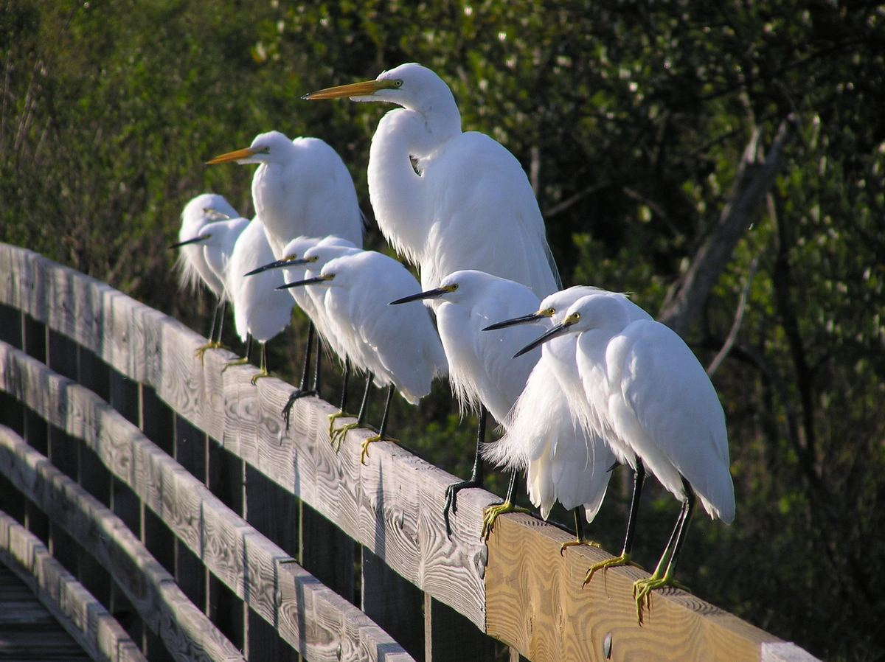
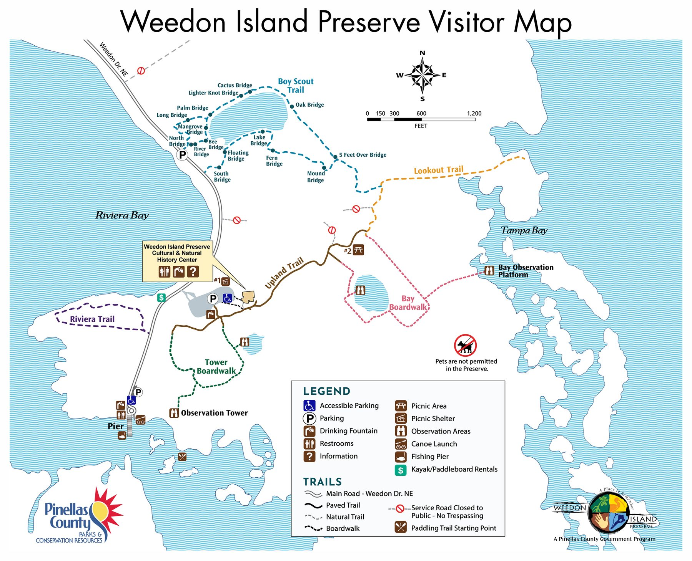

Home / Plan your visit
Plan your visit
Admission to the preserve and the Center is free. Donations are welcome.
Today at Weedon
Temporary closures are posted on the County's park updates page.
Hours
- Preserve
- Open daily, 7 a.m. until about 15 minutes before sunset. The exact closing time is posted at the entrance each day. Closed the day after Thanksgiving and December 25.
- Center
- Thursday to Saturday, 9 a.m. to 4 p.m. Sunday, 11 a.m. to 4 p.m. Closed Monday to Wednesday and on all County holidays.
- After dark
- Trails are for day use only. Overnight parking isn't allowed, and plates of cars left after closing are shared with the Pinellas County Sheriff's Office.
Getting here
Weedon Island Preserve Cultural and Natural History Center
1800 Weedon Drive NE, St. Petersburg, FL 33702
- Parking
- Three parking areas. Please don't park on the road shoulders or grass: gopher tortoises use them to travel between habitats.
- Restrooms
- At the fishing pier and the Center. An accessible unisex restroom on the west side of the Center is open during preserve hours. Indoor restrooms are open when the Center is.
- Picnics
- One picnic area and one pavilion, first come, first served. Please pack out your trash.
- weedonisland@pinellas.gov

Map and guides
Tap the map to open the print-friendly version. Paper copies are also at the Center.
Audio tours
Entrance audio tour
Center audio tour
What to bring
Tick things off as you pack. This list stays ticked on your phone.
The Center also lends backpack kits filled with activities and field guides.
Preserve rules
Management of the preserve balances recreation with restoration and conservation. Please help protect it.
Activities in the preserve are governed by Pinellas County Code, Section 2.07 and activities on the water by the Waterways Ordinance, Chapter 130.
- No pets or domestic animals, including dogs, cats, birds and horses
- No bicycles, motorcycles or other vehicles on the trail system
- All plants and animals are protected. Don't collect, dig up or release anything.
- Digging for or removing artifacts is illegal under Chapter 872, Florida Statutes
- No alcohol and no glass containers
- No smoking or fireworks
- No hunting
- Weapons are prohibited under Chapter 90-60(m). Firearms as defined in F.S. 790.01 are exempt and regulated by state law.
- Use the trash containers at trailheads, or pack it out
Accessibility
Almost two miles of the preserve's boardwalks and paved paths are handicap-accessible, including the paved route past the Center that links the two boardwalk loops.
An accessible unisex restroom on the west side of the Center is open during preserve hours. The Center's exhibit gallery is free and open during Center hours.
Questions about access for a visit or program? Call the Center at (727) 453-6500.
Common questions
Something else? Email the Center.
Can I bring my dog?
No. The preserve is the only refuge for many native animals, and they see pets as predators. That stress, plus pet waste, harms local wildlife. Pets including dogs, cats, birds and horses aren't allowed.
Can I take home a plant I found?
No. All plants and animals in the preserve are protected. If you'd like native plants at home, local nurseries stock native species.
Can I bring beer?
No. Alcohol isn't allowed on any Pinellas County preserve or management area.
Why can't I smoke or set off fireworks?
Many of the preserve's natural communities are fire-adapted and ignite quickly. A stray cigarette or bottle rocket can start a wildfire, and wildfires don't stop at the property line.
Can I hunt here?
No. Consumptive wildlife activities aren't allowed in the preserve.
I found an animal in my yard. Can I release it here?
No. County codes don't allow releasing wild or non-native animals, because of the risk of spreading disease. Contact Pinellas County Animal Services about a sick or injured animal.
Can I look for artifacts?
No. Most of the preserve is state-owned land, and digging, disturbing or removing artifacts is illegal under Chapter 872 of the Florida Statutes.
Are there bicycle trails?
No. Bicycles aren't allowed on the trail system. You can ride the paved entrance road and park in the bike racks. That doesn't include the entrance road to the Duke Energy Center on Weedon Island.
Get the monthly newsletter
Classes, camps, events and preserve news from the Center, once a month.